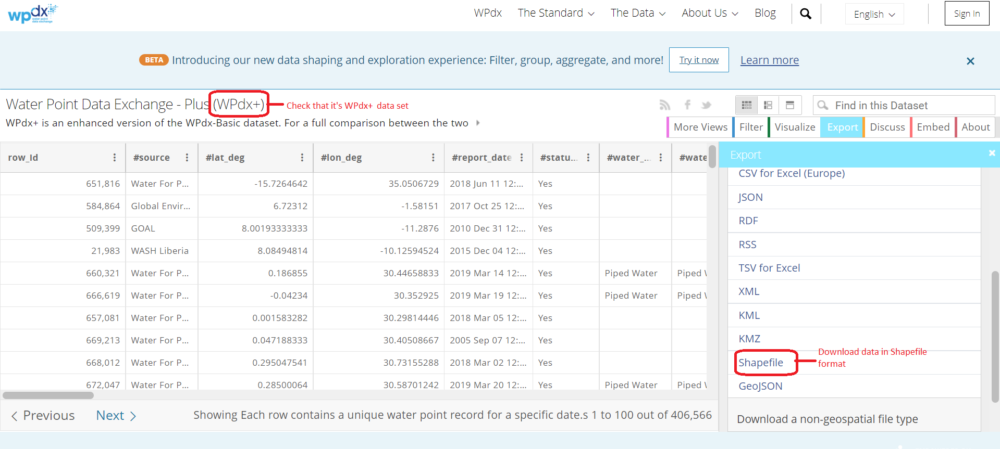

pacman::p_load(sf, tidyverse, tmap, spdep, funModeling, units)Take-home Exercise 1
First published on: 30-Nov-2022
Geospatial Analytics for Social Good
1 Overview
1.1 Setting the Scene
Water is an important resource to mankind. Clean and accessible water is critical to human health. It provides a healthy environment, a sustainable economy, reduces poverty and ensures peace and security. Yet over 40% of the global population does not have access to sufficient clean water. By 2025, 1.8 billion people will be living in countries or regions with absolute water scarcity, according to UN-Water. The lack of water poses a major threat to several sectors, including food security. Agriculture uses about 70% of the world’s accessible freshwater.
Developing countries are most affected by water shortages and poor water quality. Up to 80% of illnesses in the developing world are linked to inadequate water and sanitation. Despite technological advancement, providing clean water to the rural community is still a major development issue in many countries globally, especially in Africa.
To provide clean and sustainable water supply to the rural community, a global Water Point Data Exchange (WPdx) project was initiated. The main aim of this initiative is to collect water point related data from rural areas at the water point or small water scheme level and share the data via WPdx Data Repository, a cloud-based data library. The data is collected based on WPDx Data Standard.
1.2 Objectives
Geospatial analytics hold tremendous potential to address complex problems facing our society.
In this study, we will apply appropriate global and local measures of spatial association techniques to reveal the spatial patterns of non-functional water points in Nigeria.
1.3 The Data
Geospatia data
For this assignment, 2 data sets will be used.
geo_export: It contains information on the water points in Nigeria. The data is available from WPdx Global Data Repositories and we are using the WPdx+ data set. The data is extracted in shapefile format.

nga_lga2: The contains Nigeria Level-2 Administrative Boundary (also known as Local Government Area (LGA)) polygon features GIS data will be used. The data is downloaded from The Humanitarian Data Exchange portal
1.4 The Tasks
The specific tasks of this assignments are:
Using appropriate sf method, import the shapefiles into R and save it in a simple feature data frame format. The Projected Coordinate Systems of Nigeria, EPSG: 26391 is used
Using appropriate tidyr and dplyr methods, derive the proportion of functional and non-functional water point at LGA level.
Combining the geospatial data frames into a Simple Feature (
sf) data frame.Performing clusters and outliers analysis by using appropriate local measures of spatial association methods.
Performing hotspot areas analysis by using appropriate local measures of spatial association methods.
1.5 Thematic Mapping
- Plot maps to show the spatial distribution of functional and non-functional water point rate at LGA level by using appropriate thematic mapping technique provided by tmap package.
1.6 Analytical Mapping
- Plot hotspot areas and outliers/clusters maps of functional and non-functional water point rate at LGA level by using appropriate thematic mapping technique provided by tmap package.
2 Setup
2.1 Import and load relevant packages into R environment
The R packages we’ll use for this analysis are:
sf: used for importing, managing, and processing geospatial data
tidyverse: a collection of packages for data manipulation, visualisation and other data science related tasks
tmap: used for creating thematic maps, such as choropleth and bubble maps
spdep: used to create spatial weights matrix objects and related calculations (e.g. spatially lag attributes)
funModeling: a library for rapid Exploratory Data Analysis
units: for measurement units in R vectors, matrices and array
2.2 Import the Geospatial data sets
2.2.1 Import water point geospatial data
We import the geo_export shapefile using st_read() of sf library and use filter() of the dplyr package to extract water point records in Nigeria
wp = st_read(dsn = "Take-home_Ex1/geodata",
layer = "geo_export",
crs = 4326) %>%
filter(clean_coun == "Nigeria")
We do not transform the geographic data at this point as we will be using
st_intersects() in a later step to process the data. This is because st_intersects() only works correctly if the geospatial data are in geographic coordinate system (i.e. wgs84)
Next, write_rds() of readr package is used to save the extracted sf data table (i.e. wp) into an output file in rds data format. The output file is called wp_nga.rds and it is saved in geodata sub-folder.
write_rds(wp, "Take-home_Ex1/geodata/wp_nga.rds")2.2.2 Import Nigeria LGA boundary data
We use st_read() to import the LGA boundary data into sf data table
nga = st_read(dsn = "Take-home_Ex1/geodata",
layer = "nga_lga2",
crs = 4326)3 Data Wrangling
3.1 Recode the values in the status_cle column
The status_cle column in the wp_nga.rds file indicates the status of the water point when it was last assessed.
We do a count of the values in the status_cle column using freq() of the funModeling package.
wp_nga = read_rds("Take-home_Ex1/geodata/wp_nga.rds")
freq(data=wp_nga,input = 'status_cle')Given that we are required to plot maps relating to the proportion of functional and non-functional water points in Nigeria, we need to first compute the total number of functional, non-functional and blank value (denoted by “NA”) water points before we can derive the proportion of non-functional and functional water points.
To do so, we perform the following steps:
We use the
replace_na()method to recode all the NA values in status_cle column of the wp_nga data table into Unknownwp_nga = wp_nga %>% mutate(status_cle = replace_na(status_cle, "Unknown"))We use
filter()of dplyr to create data tables which group (i) functional, (2) non functional and (3) water points with unknown status together# Extract functional water points wpt_functional = wp_nga %>% filter(status_cle %in% c("Functional", "Functional but not in use", "Functional but needs repair")) # Extract non-functional water points wpt_nonfunctional = wp_nga %>% filter(status_cle %in% c("Abandoned/Decommissioned", "Abandoned", "Non-Functional", "Non functional due to dry season", "Non-Functional due to dry season")) # Extract water points with Unknown value wpt_unknown = wp_nga %>% filter(status_cle == "Unknown")
3.2 Perform Point-in-Polygon Count
We use st_intersects() of sf package to compute the number of functional, non-functional and unknown status water points in each LGA.
nga_wp = nga %>%
mutate(`total wpt` = lengths(
st_intersects(nga, wp_nga))) %>%
mutate(`wpt functional` = lengths(
st_intersects(nga, wpt_functional))) %>%
mutate(`wpt non-functional` = lengths(
st_intersects(nga, wpt_nonfunctional))) %>%
mutate(`wpt unknown` = lengths(
st_intersects(nga, wpt_unknown)))3.3 Save the data table for spatial analysis
We derive two fields namely pct_functional and pct_non-functional using the mutate() of dplyr package. To keep the file size small, we use select() of dplyr is used to retain only columns 3,4,9,10, 18,19,20,21,22,and 23.
nga_wp = nga_wp %>%
mutate(pct_functional = `wpt functional`/`total wpt`) %>%
mutate(`pct_non-functional` = `wpt non-functional`/`total wpt`) %>%
select(3:4, 9:10, 18:23)Thereafter ,we save the tidied sf data table into rds format for our geospatial analysis
write_rds(nga_wp, "Take-home_Ex1/geodata/nga_wp.rds")3.4 Visualise the spatial distribution of water points
# Load the nga_wp sf data file prepare in the previous steps
nga_wp <- read_rds("Take-home_Ex1/geodata/nga_wp.rds")
# Plot the various types of water points
total = qtm(nga_wp, "total wpt") +
tm_layout(main.title = "Total no. of \nwater points",
main.title.position = "center",
main.title.size = 1.0,
legend.height = 0.26,
legend.width = 0.40)
wp_functional = qtm(nga_wp, "wpt functional") +
tm_layout(main.title = "Total no. of functional \nwater points",
main.title.position = "center",
main.title.size = 1.0,
legend.height = 0.26,
legend.width = 0.40)
wp_nonfunctional = qtm(nga_wp, "wpt non-functional") +
tm_layout(main.title = "Total no. of non-functional \nwater points",
main.title.position = "center",
main.title.size = 1.0,
legend.height = 0.26,
legend.width = 0.40)
unknown <- qtm(nga_wp, "wpt unknown") +
tm_layout(main.title = "Total no. of water points \nwith unknown status",
main.title.position = "center",
main.title.size = 1.0,
legend.height = 0.26,
legend.width = 0.40)
tmap_arrange(total, wp_functional, wp_nonfunctional, unknown, ncol=2)
4 Data Processing
Before we start working on our data, we first check for and address the following to ensure that they do not affect subsequent computations and representations
Invalid geometries
missing values
4.1 Invalid geometires
We use the st_is_valid() function from sf package to check whether the geometries in nga_wp are valid. We wrap the st_is_valid() using length() function to count the number of invalid geometries returned.
length(which(st_is_valid(nga_wp) == FALSE))[1] 0This is no invalid geometries
4.2 Missing values
We use the following code chunk to check every row in the nga_wp sf data table to see if there are NA values. If so, to return these records.
nga_wp[rowSums(is.na(nga_wp))!=0,]Simple feature collection with 13 features and 10 fields
Geometry type: MULTIPOLYGON
Dimension: XY
Bounding box: xmin: 8.553504 ymin: 4.798471 xmax: 14.67882 ymax: 13.71406
Geodetic CRS: WGS 84
First 10 features:
ADM2_EN ADM2_PCODE ADM1_PCODE ADM0_EN total wpt wpt functional
3 Abadam NG008001 NG008 Nigeria 0 0
86 Bakassi NG009005 NG009 Nigeria 0 0
241 Geidam NG036006 NG036 Nigeria 0 0
250 Gubio NG008009 NG008 Nigeria 0 0
252 Gujba NG036007 NG036 Nigeria 0 0
261 Guzamala NG008010 NG008 Nigeria 0 0
400 Kaga NG008014 NG008 Nigeria 0 0
406 Kala/Balge NG008015 NG008 Nigeria 0 0
447 Kukawa NG008017 NG008 Nigeria 0 0
473 Madagali NG002010 NG002 Nigeria 0 0
wpt non-functional wpt unknown pct_functional pct_non-functional
3 0 0 NaN NaN
86 0 0 NaN NaN
241 0 0 NaN NaN
250 0 0 NaN NaN
252 0 0 NaN NaN
261 0 0 NaN NaN
400 0 0 NaN NaN
406 0 0 NaN NaN
447 0 0 NaN NaN
473 0 0 NaN NaN
geometry
3 MULTIPOLYGON (((13.83477 13...
86 MULTIPOLYGON (((8.580903 4....
241 MULTIPOLYGON (((12.47754 12...
250 MULTIPOLYGON (((13.03061 12...
252 MULTIPOLYGON (((12.33826 11...
261 MULTIPOLYGON (((13.5701 12....
400 MULTIPOLYGON (((12.56773 11...
406 MULTIPOLYGON (((14.58302 11...
447 MULTIPOLYGON (((14.1372 12....
473 MULTIPOLYGON (((13.69222 10...The results show that there are 13 records with missing values, primarily in the pct_functional and pct_non-functional columns. The 13 LGAs have no water point record at all and this resulted in a divisional error (and generating a NaN value) when we compute the the proportion of functional and non-functional water points.
We will remove these 13 records with missing values to avoid any unintended computational issue in our analysis downstream with the following code chunk.
nga_wp_processed <- na.omit(nga_wp,c("pct_non-functional"))4.3 Transform coordinate system
We first check the coordinate system of nga_wp_processed using st_crs() of the sf package.
st_crs(nga_wp_processed)Coordinate Reference System:
User input: EPSG:4326
wkt:
GEOGCRS["WGS 84",
ENSEMBLE["World Geodetic System 1984 ensemble",
MEMBER["World Geodetic System 1984 (Transit)"],
MEMBER["World Geodetic System 1984 (G730)"],
MEMBER["World Geodetic System 1984 (G873)"],
MEMBER["World Geodetic System 1984 (G1150)"],
MEMBER["World Geodetic System 1984 (G1674)"],
MEMBER["World Geodetic System 1984 (G1762)"],
MEMBER["World Geodetic System 1984 (G2139)"],
ELLIPSOID["WGS 84",6378137,298.257223563,
LENGTHUNIT["metre",1]],
ENSEMBLEACCURACY[2.0]],
PRIMEM["Greenwich",0,
ANGLEUNIT["degree",0.0174532925199433]],
CS[ellipsoidal,2],
AXIS["geodetic latitude (Lat)",north,
ORDER[1],
ANGLEUNIT["degree",0.0174532925199433]],
AXIS["geodetic longitude (Lon)",east,
ORDER[2],
ANGLEUNIT["degree",0.0174532925199433]],
USAGE[
SCOPE["Horizontal component of 3D system."],
AREA["World."],
BBOX[-90,-180,90,180]],
ID["EPSG",4326]]We note that the geometry information is reflected in under WGS 84, a Geographic Coordinate System (GCS) which uses a 3-dimensional spherical surface to define locations on the earth. For our study, we will transform the geometry to Projected Coordinate System which translates GCS data a 2-dimensional surface using st_transform() of the sf package. The Projected Coordinate Systems of Nigeria is EPSG: 26391.
nga_wp_projected <- st_transform(nga_wp_processed, crs=26391)
# check to ascertain if the CRS is correctly projected
st_crs(nga_wp_projected)Coordinate Reference System:
User input: EPSG:26391
wkt:
PROJCRS["Minna / Nigeria West Belt",
BASEGEOGCRS["Minna",
DATUM["Minna",
ELLIPSOID["Clarke 1880 (RGS)",6378249.145,293.465,
LENGTHUNIT["metre",1]]],
PRIMEM["Greenwich",0,
ANGLEUNIT["degree",0.0174532925199433]],
ID["EPSG",4263]],
CONVERSION["Nigeria West Belt",
METHOD["Transverse Mercator",
ID["EPSG",9807]],
PARAMETER["Latitude of natural origin",4,
ANGLEUNIT["degree",0.0174532925199433],
ID["EPSG",8801]],
PARAMETER["Longitude of natural origin",4.5,
ANGLEUNIT["degree",0.0174532925199433],
ID["EPSG",8802]],
PARAMETER["Scale factor at natural origin",0.99975,
SCALEUNIT["unity",1],
ID["EPSG",8805]],
PARAMETER["False easting",230738.26,
LENGTHUNIT["metre",1],
ID["EPSG",8806]],
PARAMETER["False northing",0,
LENGTHUNIT["metre",1],
ID["EPSG",8807]]],
CS[Cartesian,2],
AXIS["(E)",east,
ORDER[1],
LENGTHUNIT["metre",1]],
AXIS["(N)",north,
ORDER[2],
LENGTHUNIT["metre",1]],
USAGE[
SCOPE["Engineering survey, topographic mapping."],
AREA["Nigeria - onshore west of 6°30'E, onshore and offshore shelf."],
BBOX[3.57,2.69,13.9,6.5]],
ID["EPSG",26391]]4.4 Checking the distribution of the attribute
We note that the % value of non-functional water points are right-skewed by plotting histogram using ggplot.
ggplot(data=nga_wp_projected, aes(x= as.numeric(`pct_non-functional`)))+
geom_histogram(bins=20,
color="black",
fill="light blue") +
labs(y='Frequency',x="% of non-functional water points", title = "Distribution of % of non-functional water points")
We also plot the % value of functional water points using ggplot as follows:
ggplot(data=nga_wp_projected, aes(x= as.numeric(`pct_functional`)))+
geom_histogram(bins=20,
color="black",
fill="blue") +
labs(y='Frequency',x="% of functional water points", title = "Distribution of % of functional water points")The distribution of the proportion of functional water points is slightly skewed.
4.5 Visualise the processed data
We have completed the standard pre-processing steps and let us visualise the data with the following code chuck. We use the jenks method to classify the data points as it optimises class variances to determine the best arrangement off values into different classes
To visualise the proportion of non-functional water points over Nigera
tm_shape(nga_wp_projected) +
tm_fill("pct_non-functional",
style = "jenks",
palette = "Blues",
title = "% of non-functional wps") +
tm_borders(alpha = 0.5) +
tm_layout(main.title = "Proportion of non-functional \nwater points",
main.title.position = "center",
main.title.size = 1.2)
We will can roughly spot that the western part (especially in the south-western region) of the country has relatively more non-functional points, we cannot be sure if the faulty points are clustered around certain regions.
To visualise the proportion of functional water points over Nigera
tm_shape(nga_wp_projected) +
tm_fill("pct_functional",
style = "jenks",
palette = "Greens",
title = "% of functional wps") +
tm_borders(alpha = 0.5) +
tm_layout(main.title = "Proportion of functional \nwater points",
main.title.position = "center",
main.title.size = 1.2)5 Global Spatial Autocorrelation
We start off by first examining if there is global spatial autocorrelation among LGAs with non-functional water points, which is the objective of our study, using the following hypothesis:
H0: The distribution of non-functional water points is a random phenomenon
H1: The distribution of non-functional water points is spatially dependent
We set the level of significance, α at 0.05.
5.1 Select the appropriate Contiguity Spatial Weight for our analysis
There are 2 main criterion for defining spatial weights:
Contiguity or Adjacency criterion
Distance criterion:
Fixed distance
Adaptive Distance
Given that we have removed 13 LGAs with missing values from the data table, applying the contiguity criterion for spatial weights may not be ideal as we have suppressed the number of connections among contiguous LGAs. We generate the Queen contiguity weight matrix using poly2nd() of spdep package below and note that the number of neighbors for the LGAs range from 1 to 14, which is not very consistent.
wm_q = poly2nb(nga_wp_projected,queen=TRUE)
summary(wm_q)Neighbour list object:
Number of regions: 761
Number of nonzero links: 4348
Percentage nonzero weights: 0.750793
Average number of links: 5.713535
Link number distribution:
1 2 3 4 5 6 7 8 9 10 11 12 14
4 16 57 122 177 137 121 71 39 11 4 1 1
4 least connected regions:
138 509 525 560 with 1 link
1 most connected region:
508 with 14 linksTo overcome the reservations we have on using the contiguity criterion to determine the spatial weights, one way is to use distance-based criterion and there are 2 schemes available - Fixed Distance and Adaptive Distance
For Fixed Distance scheme, while we can make use of dnearneigh() function of spdep package to compute the distance weight matrix distance where all LGAs have at least 1 neighbor, the LGA polygons are of very different sizes and therefore we may generate excessive/limited number of neighbors for some LGAs by using a fixed distance. For instance, bigger regions at the boundaries of the map tend to have fewer neighbors and hence less likely to obtain statistically significant results. To get a sense of how different the LGAs are in terms of land size, we plot the following histogram on the area of the LGAs using st_area() of sf package.
options(scipen=999)
nga_wp_projected$area = st_area(nga_wp_projected)
ggplot(data=nga_wp_projected, aes(x= area))+
geom_histogram(bins=20,
color="black",
fill="light blue") +
labs(y='Frequency',x="Area", title = "Distribution of LGA areas")
We also print out the relevant area statistics to show the wide range in land area of the LGAs
summary(st_area(nga_wp_projected)) Min. 1st Qu. Median Mean 3rd Qu. Max.
8596599 277850189 696268537 1156093016 1472712805 11250590762 A solution to the concerns for the contiguity and fixed distance criterion is to adopt the Adaptive Distance scheme where we preset a fixed number of k neighbors per LGA. All LGAs are hence connected by the same number of numbers.
For this study, we will set k = 8 to strike a balance between not having too high a k value (which may have a smoothening out effect on the values) and being able to obtain statistically-sound results eventually. Setting k = 8 also takes into account that the distribution of the proportion non-functional water points is skewed as seen in Section 4.4.
5.2 Compute the adaptive distance weight matrix
5.2.1 Derive the centroid of every LGA
We need the centroid associated with each LGA before we can work out the neighbor list.
To get the longitude values of the centroids, we map the st_centroid() function over the geometry column of our projected sf table and access the longitude value through double bracket notation [[]] and 1.
longitude <- map_dbl(nga_wp_projected$geometry, ~st_centroid(.x)[[1]])We do the same for latitude but access the second value per each centroid with [[2]].
latitude <- map_dbl(nga_wp_projected$geometry, ~st_centroid(.x)[[2]])Thereafter we combined the longitude and latitude into the same object and review the first few records to check that the coordinates of the centroids are correctly formatted.
# Combine the longitude and latitude values into an array object
coords = cbind(longitude,latitude)
# Insepct the first few records of the object
head(coords) longitude latitude
[1,] 549364.04 123694.9
[2,] 547123.41 120376.5
[3,] 489057.42 534262.6
[4,] 593718.21 113824.1
[5,] 642618.69 251222.3
[6,] 84389.95 356433.0The first 6 sets of centroid coordinates appears fine.
5.2.2 Derive the neighbor list
We use the knearneigh() of spdep package to obtain the neighbor list (nb) object for the LGAs, setting k = 8
knn8 <- knn2nb(knearneigh(coords, k=8))
knn8Neighbour list object:
Number of regions: 761
Number of nonzero links: 6088
Percentage nonzero weights: 1.051248
Average number of links: 8
Non-symmetric neighbours list5.2.3 Convert the neighbor list object into a spatial weights object
Next, we use the nb2listw() of spdep package to convert the neighbor list into a spatial weights object.
knn8_lw <- nb2listw(knn8, style = 'B')
# Inspect the spatial weights object
summary(knn8_lw)Characteristics of weights list object:
Neighbour list object:
Number of regions: 761
Number of nonzero links: 6088
Percentage nonzero weights: 1.051248
Average number of links: 8
Non-symmetric neighbours list
Link number distribution:
8
761
761 least connected regions:
1 2 3 4 5 6 7 8 9 10 11 12 13 14 15 16 17 18 19 20 21 22 23 24 25 26 27 28 29 30 31 32 33 34 35 36 37 38 39 40 41 42 43 44 45 46 47 48 49 50 51 52 53 54 55 56 57 58 59 60 61 62 63 64 65 66 67 68 69 70 71 72 73 74 75 76 77 78 79 80 81 82 83 84 85 86 87 88 89 90 91 92 93 94 95 96 97 98 99 100 101 102 103 104 105 106 107 108 109 110 111 112 113 114 115 116 117 118 119 120 121 122 123 124 125 126 127 128 129 130 131 132 133 134 135 136 137 138 139 140 141 142 143 144 145 146 147 148 149 150 151 152 153 154 155 156 157 158 159 160 161 162 163 164 165 166 167 168 169 170 171 172 173 174 175 176 177 178 179 180 181 182 183 184 185 186 187 188 189 190 191 192 193 194 195 196 197 198 199 200 201 202 203 204 205 206 207 208 209 210 211 212 213 214 215 216 217 218 219 220 221 222 223 224 225 226 227 228 229 230 231 232 233 234 235 236 237 238 239 240 241 242 243 244 245 246 247 248 249 250 251 252 253 254 255 256 257 258 259 260 261 262 263 264 265 266 267 268 269 270 271 272 273 274 275 276 277 278 279 280 281 282 283 284 285 286 287 288 289 290 291 292 293 294 295 296 297 298 299 300 301 302 303 304 305 306 307 308 309 310 311 312 313 314 315 316 317 318 319 320 321 322 323 324 325 326 327 328 329 330 331 332 333 334 335 336 337 338 339 340 341 342 343 344 345 346 347 348 349 350 351 352 353 354 355 356 357 358 359 360 361 362 363 364 365 366 367 368 369 370 371 372 373 374 375 376 377 378 379 380 381 382 383 384 385 386 387 388 389 390 391 392 393 394 395 396 397 398 399 400 401 402 403 404 405 406 407 408 409 410 411 412 413 414 415 416 417 418 419 420 421 422 423 424 425 426 427 428 429 430 431 432 433 434 435 436 437 438 439 440 441 442 443 444 445 446 447 448 449 450 451 452 453 454 455 456 457 458 459 460 461 462 463 464 465 466 467 468 469 470 471 472 473 474 475 476 477 478 479 480 481 482 483 484 485 486 487 488 489 490 491 492 493 494 495 496 497 498 499 500 501 502 503 504 505 506 507 508 509 510 511 512 513 514 515 516 517 518 519 520 521 522 523 524 525 526 527 528 529 530 531 532 533 534 535 536 537 538 539 540 541 542 543 544 545 546 547 548 549 550 551 552 553 554 555 556 557 558 559 560 561 562 563 564 565 566 567 568 569 570 571 572 573 574 575 576 577 578 579 580 581 582 583 584 585 586 587 588 589 590 591 592 593 594 595 596 597 598 599 600 601 602 603 604 605 606 607 608 609 610 611 612 613 614 615 616 617 618 619 620 621 622 623 624 625 626 627 628 629 630 631 632 633 634 635 636 637 638 639 640 641 642 643 644 645 646 647 648 649 650 651 652 653 654 655 656 657 658 659 660 661 662 663 664 665 666 667 668 669 670 671 672 673 674 675 676 677 678 679 680 681 682 683 684 685 686 687 688 689 690 691 692 693 694 695 696 697 698 699 700 701 702 703 704 705 706 707 708 709 710 711 712 713 714 715 716 717 718 719 720 721 722 723 724 725 726 727 728 729 730 731 732 733 734 735 736 737 738 739 740 741 742 743 744 745 746 747 748 749 750 751 752 753 754 755 756 757 758 759 760 761 with 8 links
761 most connected regions:
1 2 3 4 5 6 7 8 9 10 11 12 13 14 15 16 17 18 19 20 21 22 23 24 25 26 27 28 29 30 31 32 33 34 35 36 37 38 39 40 41 42 43 44 45 46 47 48 49 50 51 52 53 54 55 56 57 58 59 60 61 62 63 64 65 66 67 68 69 70 71 72 73 74 75 76 77 78 79 80 81 82 83 84 85 86 87 88 89 90 91 92 93 94 95 96 97 98 99 100 101 102 103 104 105 106 107 108 109 110 111 112 113 114 115 116 117 118 119 120 121 122 123 124 125 126 127 128 129 130 131 132 133 134 135 136 137 138 139 140 141 142 143 144 145 146 147 148 149 150 151 152 153 154 155 156 157 158 159 160 161 162 163 164 165 166 167 168 169 170 171 172 173 174 175 176 177 178 179 180 181 182 183 184 185 186 187 188 189 190 191 192 193 194 195 196 197 198 199 200 201 202 203 204 205 206 207 208 209 210 211 212 213 214 215 216 217 218 219 220 221 222 223 224 225 226 227 228 229 230 231 232 233 234 235 236 237 238 239 240 241 242 243 244 245 246 247 248 249 250 251 252 253 254 255 256 257 258 259 260 261 262 263 264 265 266 267 268 269 270 271 272 273 274 275 276 277 278 279 280 281 282 283 284 285 286 287 288 289 290 291 292 293 294 295 296 297 298 299 300 301 302 303 304 305 306 307 308 309 310 311 312 313 314 315 316 317 318 319 320 321 322 323 324 325 326 327 328 329 330 331 332 333 334 335 336 337 338 339 340 341 342 343 344 345 346 347 348 349 350 351 352 353 354 355 356 357 358 359 360 361 362 363 364 365 366 367 368 369 370 371 372 373 374 375 376 377 378 379 380 381 382 383 384 385 386 387 388 389 390 391 392 393 394 395 396 397 398 399 400 401 402 403 404 405 406 407 408 409 410 411 412 413 414 415 416 417 418 419 420 421 422 423 424 425 426 427 428 429 430 431 432 433 434 435 436 437 438 439 440 441 442 443 444 445 446 447 448 449 450 451 452 453 454 455 456 457 458 459 460 461 462 463 464 465 466 467 468 469 470 471 472 473 474 475 476 477 478 479 480 481 482 483 484 485 486 487 488 489 490 491 492 493 494 495 496 497 498 499 500 501 502 503 504 505 506 507 508 509 510 511 512 513 514 515 516 517 518 519 520 521 522 523 524 525 526 527 528 529 530 531 532 533 534 535 536 537 538 539 540 541 542 543 544 545 546 547 548 549 550 551 552 553 554 555 556 557 558 559 560 561 562 563 564 565 566 567 568 569 570 571 572 573 574 575 576 577 578 579 580 581 582 583 584 585 586 587 588 589 590 591 592 593 594 595 596 597 598 599 600 601 602 603 604 605 606 607 608 609 610 611 612 613 614 615 616 617 618 619 620 621 622 623 624 625 626 627 628 629 630 631 632 633 634 635 636 637 638 639 640 641 642 643 644 645 646 647 648 649 650 651 652 653 654 655 656 657 658 659 660 661 662 663 664 665 666 667 668 669 670 671 672 673 674 675 676 677 678 679 680 681 682 683 684 685 686 687 688 689 690 691 692 693 694 695 696 697 698 699 700 701 702 703 704 705 706 707 708 709 710 711 712 713 714 715 716 717 718 719 720 721 722 723 724 725 726 727 728 729 730 731 732 733 734 735 736 737 738 739 740 741 742 743 744 745 746 747 748 749 750 751 752 753 754 755 756 757 758 759 760 761 with 8 links
Weights style: B
Weights constants summary:
n nn S0 S1 S2
B 761 579121 6088 10950 1985645.3 Run the Moran’s I test
We perform the Moran’s I statistical testing using moran.test() of spdep package. The Moran’s I test measures how the proportions of non-functional water points differ in the study area as a whole.
moran.test(nga_wp_projected$`pct_non-functional`,
listw=knn8_lw,
zero.policy = TRUE)
Moran I test under randomisation
data: nga_wp_projected$`pct_non-functional`
weights: knn8_lw
Moran I statistic standard deviate = 26.388, p-value <
0.00000000000000022
alternative hypothesis: greater
sample estimates:
Moran I statistic Expectation Variance
0.4496039329 -0.0013157895 0.0002919996 The p-value is <0.05 implying that we can reject the null hypothesis and conclude that the spatial distribution of non-functional water points is not a random phenomenon. The positive Moran’s I statistic of 0.450 indicates that there’s some some degree of clustering of non-functional water points in our study area.
5.4 Run the Geary’s C test
We perform the Geary’s C statistical testing using geary.test() of spdep package. The Geary’s C test measures how the proportion of the LGA non-functional water points differ from their neighbors.
geary.test(nga_wp_projected$`pct_non-functional`,
listw=knn8_lw,
zero.policy = TRUE)
Geary C test under randomisation
data: nga_wp_projected$`pct_non-functional`
weights: knn8_lw
Geary C statistic standard deviate = 25.29, p-value <
0.00000000000000022
alternative hypothesis: Expectation greater than statistic
sample estimates:
Geary C statistic Expectation Variance
0.5393883718 1.0000000000 0.0003317272 The Geary’s C statistic is between 0 and 1, indicating that there is global clustering and the proportion of non-functional water points between the LGAs and their neighbors tend to be similar in some regions of Nigeria. The p-value is <0.05 implying that the result is statistically significant and we conclude that the spatial distribution of non-functional water points is not a random phenomenon.
6 Cluster and Outlier Analysis
In this section, we compute the Local Indicators of Spatial Association (“LISA”) statistics to evaluate the existence of clusters and outliers in the spatial arrangement of non-functional water points across Nigeria.
6.1 Compute the local Moran’s I
The Local Moran’s I statistic is relatively similar to the Global Moran’s I in that it is providing a measure of how similar locations are to their neighbors. However, the difference is that each LGA receive its own I value, as well as its own variance, z value, expected I, and variance of I
We use the localmoran() of spdep package to compute the local Moran’s I for non-functional water points.
localMI <- localmoran(nga_wp_projected$`pct_non-functional`, knn8_lw)
# Inspect the first few records generated
head(localMI) Ii E.Ii Var.Ii Z.Ii Pr(z != E(Ii))
1 5.205163 -0.006635614 4.998981 2.331025 0.019752051
2 4.755332 -0.004013898 3.024887 2.736483 0.006209989
3 1.484009 -0.013172741 9.915650 0.475460 0.634459103
4 6.929392 -0.005959689 4.490148 3.272941 0.001064347
5 5.129117 -0.008452809 6.366528 2.036134 0.041736858
6 -1.311319 -0.001416732 1.068001 -1.267515 0.204971134The column on the far right provides the p-values. We can relate these p-values to different confidence levels (e.g. 99%, 95%, etc.) in order to draw a conclusion about the spatial distribution of non-functional water points across the LGAs.
For ease of subsequent analysis, we create a sf data table by appending the local Moran’s I dataframe (i.e. localMI) onto nga_wp_projected data table. At the same time, we rename the p-value column for the local Moran’s I to “Pr.li”.
nga_wp_projected.localMI <- cbind(nga_wp_projected,localMI) %>%
rename(Pr.Ii = Pr.z....E.Ii..)6.2 Map the local Moran’s I statistic and the Moran’s I p-value
Using choropleth mapping functions of tmap package, we plot 2 maps:
Map 1 representing the local Moran’s I values
Map 2 representing the local Moran’s I p-values
For non-functional water-points
# 1. Map 1 representing the Local Moran's I values
localMI.map <- tm_shape(nga_wp_projected.localMI) +
tm_fill(col = "Ii",
style = "pretty",
title = "Local Moran's I statistics",
palette = "BrBG") +
tm_borders(alpha = 0.5) +
tm_layout(main.title = "Map 1: Local Moran's I statistics \n(Non-functional water points)",
main.title.position = "center",
main.title.size = 1.2,
legend.height = 0.26,
legend.width = 0.40)
# 2. Map representing the local Moran's I p-values
pvalue.map <- tm_shape(nga_wp_projected.localMI) +
tm_fill(col = "Pr.Ii",
breaks=c(-Inf, 0.001, 0.01, 0.05, 0.1, Inf),
palette="-BuPu",
title = "local Moran's I p-values") +
tm_borders(alpha = 0.5) +
tm_layout(main.title = "Map 2: Local Moran's I p-values \n(non-functional water points)",
main.title.position = "center",
main.title.size = 1.2,
legend.height = 0.26,
legend.width = 0.40)
tmap_arrange(localMI.map, pvalue.map, asp=1, ncol=2)Variable(s) "Ii" contains positive and negative values, so midpoint is set to 0. Set midpoint = NA to show the full spectrum of the color palette.
For functional water points
Similarly, we map the local Moran I statistics for functional water points by repeating the steps in Sections 6.1 and 6.2
# Generate the local Moran's I
localMI_func <- localmoran(nga_wp_projected$`pct_functional`, knn8_lw)
# Append local Moran's I values to data frame
nga_wp_projected.localMI_func <- cbind(nga_wp_projected,localMI_func) %>%
rename(Pr.Ii = Pr.z....E.Ii..)
# Map 1 representing the Local Moran's I values
localMI_func.map <- tm_shape(nga_wp_projected.localMI_func) +
tm_fill(col = "Ii",
style = "pretty",
title = "Local Moran's I statistics",
palette = "BrBG") +
tm_borders(alpha = 0.5) +
tm_layout(main.title = "Map 1a: Local Moran's I statistics \n(functional water points)",
main.title.position = "center",
main.title.size = 1.2,
legend.height = 0.26,
legend.width = 0.40)
# 2. Map representing the local Moran's I p-values
pvalue_func.map <- tm_shape(nga_wp_projected.localMI_func) +
tm_fill(col = "Pr.Ii",
breaks=c(-Inf, 0.001, 0.01, 0.05, 0.1, Inf),
palette="-BuPu",
title = "local Moran's I p-values") +
tm_borders(alpha = 0.5) +
tm_layout(main.title = "Map 2a: Local Moran's I p-values \n(functional water points)",
main.title.position = "center",
main.title.size = 1.2,
legend.height = 0.26,
legend.width = 0.40)
tmap_arrange(localMI_func.map, pvalue_func.map, asp=1, ncol=2)Variable(s) "Ii" contains positive and negative values, so midpoint is set to 0. Set midpoint = NA to show the full spectrum of the color palette.6.3 Plot the LISA map
Before plotting the map, we need to first prepare the map classes. The preparatory steps involved are as follow:
Create a vector to contain the cluster class: quadrant
Derive the spatially lagged values for proportion of non-functional water points and center them around the mean value using
lag.listtw()of spdep package: DVCenter the local Moran’s I values around the mean value: LM_I
Set the level of significance for the local Moran’s I statistic: signif
Define and assign the classes based on DV and LM_I values.
[DV <0 & LM_I>0] <- 1 Low-Low
[DV >0 & LM_I<0] <- 2 Low-High
[DV <0 & LM_I<0] <- 3 High-Low
[DV >0 & LM_I>0] <- 4 High-High
Allocate non-significant Moran’s I value to 0
For non-functional water-points
# Step 1
quadrant <- vector(mode="numeric",length=nrow(localMI))
# Step 2
nga_wp_projected$`lag_pct_non-functional` <- lag.listw(knn8_lw, nga_wp_projected$`pct_non-functional`)
DV <- nga_wp_projected$`lag_pct_non-functional` - mean(nga_wp_projected$`lag_pct_non-functional`)
# Step 3
LM_I <- localMI[,1] - mean(localMI[,1])
# Step 4
signif <- 0.05
# Step 5
quadrant[DV <0 & LM_I>0] <- 1
quadrant[DV >0 & LM_I<0] <- 2
quadrant[DV <0 & LM_I<0] <- 3
quadrant[DV >0 & LM_I>0] <- 4
# Step 6
quadrant[localMI[,5]>signif] <- 0Using choropleth mapping functions of tmap package, we plot 2 additional maps:
- Map 3 representing the Proportion of non-functional water points
- Map 4 representing the LISA map of spatial clusters
# Map 3 representing the Proportion of non-functional water points
non_functional_wp <- tm_shape(nga_wp_projected) +
tm_fill("pct_non-functional",
style = "jenks",
palette = "Blues",
title = "% of non-functional wps") +
tm_borders(alpha = 0.5) +
tm_layout(main.title = "Map 3: Proportion of non-functional \nwater points",
main.title.position = "center",
main.title.size = 1.2)
# Map 4 representing the LISA map of spatial clusters
nga_wp_projected.localMI$quadrant <- quadrant
colors <- c("#999999", "#2c7bb6", "#abd9e9", "#fdae61", "#d7191c")
clusters <- c("insignificant", "low-low", "low-high", "high-low", "high-high")
LISAmap <- tm_shape(nga_wp_projected.localMI) +
tm_fill(col = "quadrant",
style = "cat",
palette = colors[c(sort(unique(quadrant)))+1],
labels = clusters[c(sort(unique(quadrant)))+1],
popup.vars = c("")) +
tm_view(set.zoom.limits = c(11,17)) +
tm_borders(alpha=0.5) +
tm_layout(main.title = "Map 4: LISA map of spatial clusters \n(non-functional water points)",
main.title.position = "center",
main.title.size = 1.2)
tmap_arrange(non_functional_wp, LISAmap,
asp=1, ncol=2)
For functional water-points
We repeat the steps above to plot the maps for functional water points.
# Step 1
quadrant_func <- vector(mode="numeric",length=nrow(localMI_func))
# Step 2
nga_wp_projected$`lag_pct_functional` <- lag.listw(knn8_lw, nga_wp_projected$`pct_functional`)
DV_func <- nga_wp_projected$`lag_pct_functional` - mean(nga_wp_projected$`lag_pct_functional`)
# Step 3
LM_I_func <- localMI_func[,1] - mean(localMI_func[,1])
# Step 4
signif <- 0.05
# Step 5
quadrant_func[DV_func <0 & LM_I_func>0] <- 1
quadrant_func[DV_func >0 & LM_I_func<0] <- 2
quadrant_func[DV_func <0 & LM_I_func<0] <- 3
quadrant_func[DV_func >0 & LM_I_func>0] <- 4
# Step 6
quadrant_func[localMI_func[,5]>signif] <- 0
# Map 3a representing the Proportion of non-functional water points
functional_wp <- tm_shape(nga_wp_projected) +
tm_fill("pct_functional",
style = "jenks",
palette = "Blues",
title = "% of functional wps") +
tm_borders(alpha = 0.5) +
tm_layout(main.title = "Map 3a: Proportion of functional \nwater points",
main.title.position = "center",
main.title.size = 1.2)
# Map 4a representing the LISA map of spatial clusters
nga_wp_projected.localMI_func$quadrant_func <- quadrant_func
colors <- c("#999999", "#2c7bb6", "#abd9e9", "#fdae61", "#d7191c")
clusters <- c("insignificant", "low-low", "low-high", "high-low", "high-high")
LISAmap_func <- tm_shape(nga_wp_projected.localMI_func) +
tm_fill(col = "quadrant_func",
style = "cat",
palette = colors[c(sort(unique(quadrant)))+1],
labels = clusters[c(sort(unique(quadrant)))+1],
popup.vars = c("")) +
tm_view(set.zoom.limits = c(11,17)) +
tm_borders(alpha=0.5) +
tm_layout(main.title = "Map 4a: LISA map of spatial clusters \n(functional water points)",
main.title.position = "center",
main.title.size = 1.2)
tmap_arrange(functional_wp, LISAmap_func,
asp=1, ncol=2)6.4 Interpretation of LISA analysis results
Our discussion below will be based on non-functional water points which is the objective of our study.
Map 3 shows the regions with higher proportions of non-function water points were spread throughout the western part of Nigeria, especially in the south-west region. The Global Moran’s I and Geary’s C computed in sections 4.3.1 and 4.3.2 respectively confirmed that there’s some degree of clustering of non-functional water points in Nigeria. So this begs the question of where do the clusters of non-functional water points lie. In terms of efforts to review, inspect and repair these faulty water points, it would be more cost effective if we can identify where they are congregated to manage them as a group/cluster.
Maps 1 and 2, which indicate the local Moran’s I values and p-values indicate that significant clusters appear in the north-east and south-west of the country.
The LISA map (Map 4) makes it easier by highlighting the 4 separate high-high clusters (labelled in the enlarged LISA map below) and, attention should be placed on Clusters 1 and 2 given the wider spread of non-functional water points and larger number of LGAs affected.
It is also interesting to note that most low-low clusters are gathered around the north-east part of the country and it maybe worth investigating why the region has lower proportion of water points failures. Most of the low-high and high-low outliers are adjacent to high-high and low-low clusters, which is understandable given that each LGA’s classification is relative to its neighbors. There are pockets of high-low outliers (in orange) spread across the study area. The local administration of these high-low areas should be alerted to their classification as “outliers” and encouraged to address the seemingly higher proportion of faulty water points vis-a-vis their neighbors .
7 Hot Spot and Cold Spot Area Analysis
Hot spots refer to regions with attribute values that are higher relative to its surroundings. We will use Getis-Ord’s Gi statistics to detect such spatial anomalies. The method looks at neighbors within a defined proximity to identify where high or low values cluster spatially. Statistically significant hot-spots are defined as areas of high values where other areas within the neighborhood range also share high values too.
The analysis consists of three steps:
Derive spatial weight matrix
Compute Gi statistics
Map Gi statistics
We have accomplished Step 1 in Section 4.2 when we derived the adaptive distance weight matrix. Therefore we go next compute the Gi statistics
7.1 Compute Gi statistics using adaptive distance weight matrix
We use the localG() of spdep package to drive the local GI statistics and then create a sf data table by appending the local Gi statistics onto nga_wp_projected data table. At the same time, we rename the Gi statistics column to gstat_adaptive.
For non-functional water-points
# Compute the local Gi statistics
gi.adaptive <- localG(nga_wp_projected$`pct_non-functional`, knn8_lw, zero.policy = FALSE)
# Create nga_wp_projected.gi sf data table to store the Gi statistics
nga_wp_projected.gi <- cbind(nga_wp_projected, as.matrix(gi.adaptive)) %>%
rename(gstat_adaptive = as.matrix.gi.adaptive.)7.2 Mark the Gi statistics that are significant
The localG() function returns a Z-value and we will check this against the critical value setting the level of significance at 0.05. Based on the documentation for locaG() function, the critical values of the statistic under assumptions given in the references for the 95th percentile are for n=1: 1.645, n=50: 3.083, n=100: 3.289, n=1000: 3.886. For our analysis, we will use the more stringent critical value of 3.886 to define statistical significance. We will create an indicator column in the nga_wp_projected.gi data table for Gi statistics that are significant.
For non-functional water-points
critial_value <- 3.886
nga_wp_projected.gi = nga_wp_projected.gi %>%
mutate(gi_sig_indicator = case_when(
abs(gstat_adaptive)> critial_value ~ "Yes",
abs(gstat_adaptive)<= critial_value ~ "No"
))7.3 Map Gi values with adaptive distance weights
We use the choropleth mapping functions of tmap package, we plot 2 maps:
Map 5 representing the local Gi Z-values
Map 6 representing areas with significant Gi Z-values
For non-functional water-points
# Map 5 representing the Hot and Cold spots using Gi Statistics
Gimap <- tm_shape(nga_wp_projected.gi) +
tm_fill(col = "gstat_adaptive",
style = "pretty",
palette="-RdBu",
title = "local Gi") +
tm_borders(alpha = 0.5) +
tm_layout(main.title = "Map 5: Gi values with \nadaptive distance weights",
main.title.position = "center",
main.title.size = 1.2)
# Map 6 representing the spots with significant Gi Statistics
Gimap_sig <- tm_shape(nga_wp_projected.gi) +
tm_fill(col = "gi_sig_indicator",
palette = "-RdGy",
title = "Significant Gi") +
tm_borders(alpha = 0.5) +
tm_layout(main.title = "Map 6: LGAs with significant \nGi Statistic",
main.title.position = "center",
main.title.size = 1.2)
tmap_arrange(Gimap, Gimap_sig, asp=1, ncol=2)Variable(s) "gstat_adaptive" contains positive and negative values, so midpoint is set to 0. Set midpoint = NA to show the full spectrum of the color palette.
For functional water-points
We repeat the steps in section 7.1 to 7.3 above to plot the maps for functional water points.
# Compute the local Gi statistics
gi.adaptive_func <- localG(nga_wp_projected$`pct_functional`, knn8_lw, zero.policy = FALSE)
# Create nga_wp_projected.gi sf data table to store the Gi statistics
nga_wp_projected.gi_func <- cbind(nga_wp_projected, as.matrix(gi.adaptive_func)) %>%
rename(gstat_adaptive_func = as.matrix.gi.adaptive_func.)
# Identify GI statistics that are signficant
critial_value <- 3.886
nga_wp_projected.gi_func = nga_wp_projected.gi_func %>%
mutate(gi_sig_indicator_func = case_when(
abs(gstat_adaptive_func)> critial_value ~ "Yes",
abs(gstat_adaptive_func)<= critial_value ~ "No"
))
# Map Gi values
# Map 5a representing the Hot and Cold spots using Gi Statistics for functional water points
Gimap_func <- tm_shape(nga_wp_projected.gi_func) +
tm_fill(col = "gstat_adaptive_func",
style = "pretty",
palette="-RdBu",
title = "local Gi") +
tm_borders(alpha = 0.5) +
tm_layout(main.title = "Map 5a: Gi values for \nfunctional water points",
main.title.position = "center",
main.title.size = 1.2)
# Map 6 representing the spots with significant Gi Statistics
Gimap_sig_func <- tm_shape(nga_wp_projected.gi_func) +
tm_fill(col = "gi_sig_indicator_func",
palette = "-RdGy",
title = "Significant Gi") +
tm_borders(alpha = 0.5) +
tm_layout(main.title = "Map 6a: LGAs with significant Gi \nstats for functional water points",
main.title.position = "center",
main.title.size = 1.2)
tmap_arrange(Gimap_func, Gimap_sig_func, asp=1, ncol=2)Variable(s) "gstat_adaptive_func" contains positive and negative values, so midpoint is set to 0. Set midpoint = NA to show the full spectrum of the color palette.7.4 Interpretation of Hot-spot area analysis
Our discussion below will be based on non-functional water points which is the objective of our study.
Based on Maps 5 and 6, there are 3 regions of hot-spots and 2 regions of cold-spots that are statistically significant.
In terms of planning and management of repairs, priority can be given to these 3 hot-spot regions given that the proportional of non-functional water points are relative to their neighbors. It is also worth noting that all 3 hot-spots regions are within high-high clusters under the LISA map.
For the 2 cold-spot regions, it would be interesting to see if there is any factor which influence the lower proportion of faulty water points and consider if they are relevant to prevent the water point malfunctioning at other LGAs, especially those in the high-high clusters or hot-spot regions.
8 Conclusion
As illustrated by this case study, geospatial autocorrelation analysis can help water point policy makers, maintenance teams to identify clusters and hot-spots for non-functional water points, plan for and priortise the repairs. On the other hand, a further examination of the outliers and cold-spots could offer insights on how water point failures can be avoided to provide clean and adequate water supply to improve the lives of the people in Nigeria.
Geospatial analytics is indeed a useful tool to help organisations and entities optimise the use of their limited resources and make informed decisions that are data driven.
References
Megan Sim, Analysing and Visualing Spatio-temporal patterns of Covid-19 in DKI Jakarta, Indonesia
SAS Help Centre, The Moran Scatter Plot, SAS Help Center: The Moran Scatter Plot
What is Hotspot Analysis?, What is Hotspot Analysis? | Geospatiality (glenbambrick.com)